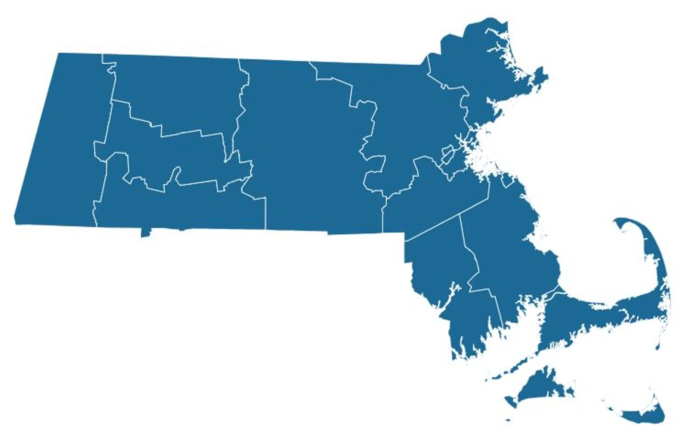

For You
Trending
Covid-19
News
Sports
Entertainment
Trending in Science
Starship
55.5k tweets
Sports Trending
Joe Rogan
5,218 tweets
The New York Times
CNN's Cuomo Conundrum

Covid-19 - LIVE
Covid-19: news and Updates for Massachusetts
Bloomberg Opinion
Thinking about getting a booster? Read this first
Trending in United States
Wonder Bread
1,259 tweets
Dogist
Cutest dog ever??